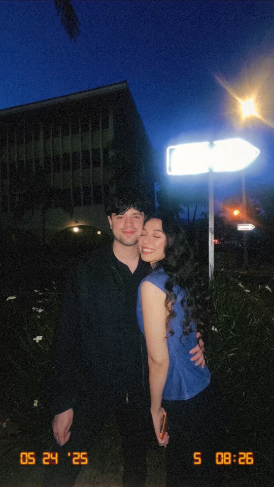

when you made me the luckiest guy

look at the size of that dome

our favorite place
Will you be my Valentine??
PW to come 💕
For Xitlalic 💌
WRONG!! YOU HAVE TO WAIT! 🤍
Taly! I really miss you today (I’m writing this a week in the past but I know I will still be missing you)!! Sorry I couldnt be there on your favorite holiday big head.. Got two dang tests on Monday on cardiology; how relevant, right?!? But Im very excited to see you this following week and share time together. I hope you like your flowers, I gave them an idea and I hope they execute it well?! haha…
This website has taken me hours even with the help of chatgpt; even tho there are not much details to it its been real tough to just work out the small details there is. So even though its simple I hope you appreciate it.
Also I used to believe I wasn’t the jealous type and never even thought about it; I thought I was just some nonchalant noncaring guy.. But youve made me realize I can be jealous; and not like in a crazy bad way haha but like in a I want you to myself and youre mine; in a non-controlling and respectful manner type of way.. I dont know where Im going with this.. I’ll still keep this in here i guess haha.. hmmm youve made me realize I can care so much about someone that I can be more vulnerable? that I can feel these emotions or get hurt, which you know im scared of, but youve really let down my walls whether you know it or not.. I may not show it but you make me comfortable and like give myself entirely?
I really miss your hugs, I think I took that for granted. Kind of crazy that we went from it being weird to hug as friends to I can probably just hug you for hours. I feel so at home with us being that close. I love when we become still, calm, and quiet and then I can start feeling your heartbeat on my chest. Then the way your head fits right underneath my chin and our arms align.. I think we were meant to fit eachother.. I can fall asleep in your arms so easily as well. Your hugs just make me think of what I believe home to be..
I miss your subtle kisses you give me all over. I miss your slight touch on my face and when you rest your hand on my hand. I miss feeling those bony skinny long fingers. I miss your butterfly kisses, I thought it was so weird at first but I really love it now, something about feeling your cheek and your eyelashes tickle my eyes, very intimate. I miss rubbing your nose with my nose while I close my eyes and just being in that moment in time with you rubbing noses. I miss giving you forehead kisses, miss feeling that oil on my lips ahahhaa; and then you move your face all around cause you want kisses everywhere else on your face, Ms needy.. I miss your pretty light brown eyes and staring at eachother, I miss the way they look in the sun as they get even lighter; and your pretty eyelashes just make the perfect combo.. I miss touching and holding your face as I look into your eyes, feeling all the textures (huge pores and fuzzy hair bwahahhahahaha). I miss feeling your arms and back as I hug you ms skinny and bony lady. I miss feeling your thighs and legs, and I like that you noticed thats how I let you know im there when we are in public or around people. But its also because you make me feel safe and you are my ground and whenever I feel overwhelmed, awkward, or just feel like I need to connect with you; I reach out for you. I miss waking up and seeing that beautiful face every morning. I miss doordashing food with you. I miss coming home to you. I miss us struggling and figuring out life together and only having eachother. I miss living life with you and you being my whole world. You make me very happy.
As we start anew on this journey. I want to make sure I never forget how much you mean to me and how you make me feel. Which is why I wanted to make a website that can be online forever and easy to access? You mean the world to me and I want to be the best ever to you. I want to change my view on relationships and negative thoughts and associations I have of them; just for you. I would love and be so happy to calI you my wife one day. I dont want to lose you again. Stay tuned to have to eat ketchup again, soon…
I think you drive me to do more and to be better.. Because I want to be better for us and so that one day we can have a home, kids, a cat or two, and maybe a Mambo… and I think thats how I want to live my life from now on. You know not just for me, but for us? I want you to be intertwined in my mind and I want to stop being selfish and not only have my goals and desires in my head. I want the honeymoon phase to be forever.. I love you taly and I want to show you that I love you, and show everyone else that I love you. I will make sure you are known and heard and that there are clear lines from now on.
You make me very very happy when I’m around you and I want to feel that forever. I hope I make you feel the same…
Happy Valentine’s Day, my love.
when you made me the luckiest guy
look at the size of that dome
our favorite place
I love you, Xitlalic 🤍